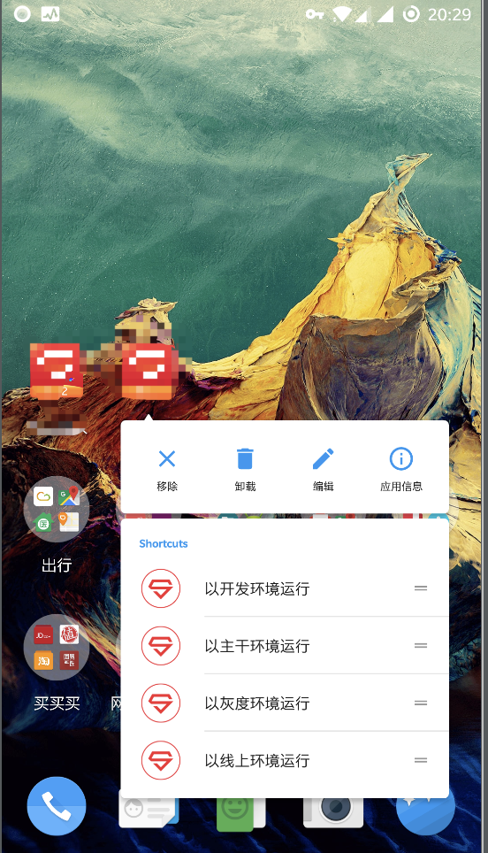
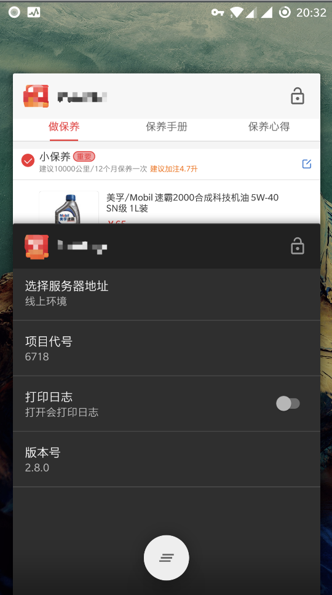

<!DOCTYPE HTML>
<html style="height:100%">
<head>
    <meta charset="UTF-8">
    <meta name="viewport" content="width=device-width, initial-scale=1.0"/>
    <meta name="Keywords" content="blog"/>
    <meta name="Description" content="blog"/>
    <title>Nestor的博客</title>
    <link rel="shortcut icon" href="/static/favicon.png"/>
    <link rel="stylesheet" type="text/css" href="/main.css" />
    <script>
        var _hmt = _hmt || [];
        (function() {
          var hm = document.createElement("script");
          hm.src = "//hm.baidu.com/hm.js?31f09fff161b973e671edf0282191b90";
          var s = document.getElementsByTagName("script")[0];
          s.parentNode.insertBefore(hm, s);
        })();
    </script>

</head>
<body style="height:100%">
  <div style="position: fixed;bottom: 20px;right: 15px;z-index: 888;">
    <iframe frameborder="no" border="0" marginwidth="0" marginheight="0" width=330 height=450 src="http://music.163.com/outchain/player?type=0&id=96831087&auto=1&height=430"></iframe>
  </div>
<div class="main" style="width:60%;height:95%">
    <div class="header">
    	<ul id="pages">
            <li><a href="/">主页</a></li>
            <li><a href="/#/tags">标签</a></li>
            <li><a href="/#/archive">文章</a></li>
    	</ul>
    </div>
	<div class="wrap-header">
	<h1>
    <a href="/" id="title"></a>
	</h1>
	</div>
<div id="md" style="display: none;">
<!-- markdown -->
# 提升开发效率-构建速度与快速配置
## 问题：
1. 随着项目的逐步复杂，各种业务也已经到达了12个以上，app的编译速度越来越缓慢。特别是我们在去年年底和今年年初对整个android端app进行的模块化，由原来的一个模块分成了现在的11个模块。这更加导致了编译速度进一步变慢，同时还引入了growingio，以及我们组开自己发的无埋点统计。由于要进行代码插庄进一步导致编译速度变缓，在非ssd的电脑上首次编译需要进20分钟时间，二次编译也要接近5分钟（开启enableBuildCache的功劳）。
2. 开发，测试期间不同项目间的服务器地址都需要切换，版本号的变化等等因为后台部分接口对于不同版本有不同的处理，并且一个项目开发期间不同功能开发进度可能不同，所以有时候需要不同业务间切换版本号。
__________
## 方案：
1. 今年第一季度末尾我已经开始进行一些提高编译速度的方法。期间使用过Instant Run，但首次编译会更慢，同时某些改动（见官方文档）后会需要重新进行全量编译；freeline，比Instant Run适用范围更广一点但某些情况仍然需要进行全量编译，并且有部分bug。目前我采取了下面的方案并配合Instant Run来提升编译速度：
    * 新建dev模块，独立于正式打包的app模块，该模块去除了会进行代码插庄的依赖（growingio，自己的无埋点统计等）和关闭tinker等。
    * 对各模块分别进行编译并上传到内网Maven仓库，对于某个开发只需要开启自己需要改动的模块，其它模块引用aar就可以了。
2. 增加shortcuts，点击就可以直接以对应的服务器启动；增加独立于其它activity的设置界面，可以不返回当前界面的情况下通过多任务界面进入设置界面并修改服务器，版本号等参数。
    * 
-----------
## 实现
1. 加快编译速度
    * 在frameworkd模块里增加对dev模块编译的标识

    ````
        productFlavors {
            ...
            dev {
                buildConfigField "boolean", "DEV", "true"
            }

        }
    ````

    ````
        public static boolean isDev() {
            return BuildConfig.DEV;
        }
    ````

    * 在dev模块中引入模块配置

    ````
    // 用户模块依赖导入
    if (Boolean.parseBoolean(USER)) {
        compile(project(':user')) {
            exclude module: 'qccrframework'
        }
    } else {
        compile("com.twl.qichechaoren:user:${APP_VER_NAME_M}")
    }
    // 商品模块依赖导入
    if (Boolean.parseBoolean(GOODS)) {
        compile(project(':goods')) {
            exclude module: 'qccrframework'
        }
    } else {
        compile("com.twl.qichechaoren:goods:${APP_VER_NAME_M}")
    }
    // 订单模块依赖导入
    if (Boolean.parseBoolean(ORDER)) {
        compile(project(':order')) {
            exclude module: 'qccrframework'
        }
    } else {
        compile("com.twl.qichechaoren:order:${APP_VER_NAME_M}")
    }
    // 引导模块依赖导入
    if (Boolean.parseBoolean(GUIDE)) {
        compile(project(':guide')) {
            exclude module: 'qccrframework'
        }
    } else {
        compile("com.twl.qichechaoren:guide:${APP_VER_NAME_M}")
    }
    // 违章查询模块依赖导入
    if (Boolean.parseBoolean(ILLEGAL)) {
        compile(project(':illegal')) {
            exclude module: 'qccrframework'
        }
    } else {
        compile("com.twl.qichechaoren:illegal:${APP_VER_NAME_M}")
    }
    // 评价模块依赖导入
    if (Boolean.parseBoolean(EVALUATE)) {
        compile(project(':evaluate')) {
            exclude module: 'qccrframework'
        }
    } else {
        compile("com.twl.qichechaoren:evaluate:${APP_VER_NAME_M}")
    }
    // 加油模块依赖导入
    if (Boolean.parseBoolean(REFUEL)) {
        compile(project(':refuel')) {
            exclude module: 'qccrframework'
        }
    } else {
        compile("com.twl.qichechaoren:refuel:${APP_VER_NAME_M}")
    }
    // 保养模块依赖导入
    if (Boolean.parseBoolean(MAINTENANCE)) {
        compile(project(':maintenance')) {
            exclude module: 'qccrframework'
        }
    } else {
        compile("com.twl.qichechaoren:maintenance:${APP_VER_NAME_M}")
    }
    // 门店模块依赖导入
    if (Boolean.parseBoolean(STORE)) {
        compile(project(':store')) {
            exclude module: 'qccrframework'
        }
    } else {
        compile("com.twl.qichechaoren:store:${APP_VER_NAME_M}")
    }
    // 爱车模块依赖导入
    if (Boolean.parseBoolean(CAR)) {
        compile(project(':car')) {
            exclude module: 'qccrframework'
        }
    } else {
        compile("com.twl.qichechaoren:car:${APP_VER_NAME_M}")
    }
    ```` 

    ````
        DEV=true
        FRAMEWORK=true
        USER=false
        GOODS=false
        ORDER=false
        GUIDE=false
        MAINTENANCE=true
        EVALUATE=false
        REFUEL=false
        STORE=false
        ILLEGAL=false
        CAR=false
    ```` 

2. 快速设置

    *   
   ````
        <activity
            android:name=".SettingsActivity"
            android:label="Settings"
            android:launchMode="singleInstance"
            android:taskAffinity="主包名.test"
            android:theme="@android:style/Theme.DeviceDefault">
            <intent-filter>
                <action android:name="android.intent.action.MAIN" />
                <category android:name="android.intent.category.LAUNCHER" />
            </intent-filter>
        </activity>
    ````


转载请注明出处：[http://blog.yzapp.cn/提升开发效率-构建速度与快速配置.html](http://blog.yzapp.cn/提升开发效率-构建速度与快速配置.html)
<!-- markdown end -->
</div>
<div class="entry" id="main" style="min-height:75%">
<!-- content -->
<h1 id="">提升开发效率-构建速度与快速配置</h1>

<h2 id="">问题：</h2>

<ol>
<li>随着项目的逐步复杂，各种业务也已经到达了12个以上，app的编译速度越来越缓慢。特别是我们在去年年底和今年年初对整个android端app进行的模块化，由原来的一个模块分成了现在的11个模块。这更加导致了编译速度进一步变慢，同时还引入了growingio，以及我们组开自己发的无埋点统计。由于要进行代码插庄进一步导致编译速度变缓，在非ssd的电脑上首次编译需要进20分钟时间，二次编译也要接近5分钟（开启enableBuildCache的功劳）。</li>
<li>开发，测试期间不同项目间的服务器地址都需要切换，版本号的变化等等因为后台部分接口对于不同版本有不同的处理，并且一个项目开发期间不同功能开发进度可能不同，所以有时候需要不同业务间切换版本号。</li>
</ol>

<hr>

<h2 id="">方案：</h2>

<ol>
<li>今年第一季度末尾我已经开始进行一些提高编译速度的方法。期间使用过Instant Run，但首次编译会更慢，同时某些改动（见官方文档）后会需要重新进行全量编译；freeline，比Instant Run适用范围更广一点但某些情况仍然需要进行全量编译，并且有部分bug。目前我采取了下面的方案并配合Instant Run来提升编译速度：
<ul><li>新建dev模块，独立于正式打包的app模块，该模块去除了会进行代码插庄的依赖（growingio，自己的无埋点统计等）和关闭tinker等。</li>
<li>对各模块分别进行编译并上传到内网Maven仓库，对于某个开发只需要开启自己需要改动的模块，其它模块引用aar就可以了。</li></ul></li>
<li>增加shortcuts，点击就可以直接以对应的服务器启动；增加独立于其它activity的设置界面，可以不返回当前界面的情况下通过多任务界面进入设置界面并修改服务器，版本号等参数。</li>
</ol>

<h2 id="imageimgshortcutspngimageimgsettingspng">    * </h2>

<h2 id="">实现</h2>

<ol>
<li><p>加快编译速度</p>

<ul><li>在frameworkd模块里增加对dev模块编译的标识</li></ul>

<p>````
    productFlavors {
        ...
        dev {
            buildConfigField "boolean", "DEV", "true"
        }</p>

<pre><code>}
</code></pre>

<p>````</p>

<p><code>
    public static boolean isDev() {
        return BuildConfig.DEV;
    }
</code></p>

<ul><li>在dev模块中引入模块配置</li></ul>

<p><code>
// 用户模块依赖导入
if (Boolean.parseBoolean(USER)) {
    compile(project(':user')) {
        exclude module: 'qccrframework'
    }
} else {
    compile("com.twl.qichechaoren:user:${APP_VER_NAME_M}")
}
// 商品模块依赖导入
if (Boolean.parseBoolean(GOODS)) {
    compile(project(':goods')) {
        exclude module: 'qccrframework'
    }
} else {
    compile("com.twl.qichechaoren:goods:${APP_VER_NAME_M}")
}
// 订单模块依赖导入
if (Boolean.parseBoolean(ORDER)) {
    compile(project(':order')) {
        exclude module: 'qccrframework'
    }
} else {
    compile("com.twl.qichechaoren:order:${APP_VER_NAME_M}")
}
// 引导模块依赖导入
if (Boolean.parseBoolean(GUIDE)) {
    compile(project(':guide')) {
        exclude module: 'qccrframework'
    }
} else {
    compile("com.twl.qichechaoren:guide:${APP_VER_NAME_M}")
}
// 违章查询模块依赖导入
if (Boolean.parseBoolean(ILLEGAL)) {
    compile(project(':illegal')) {
        exclude module: 'qccrframework'
    }
} else {
    compile("com.twl.qichechaoren:illegal:${APP_VER_NAME_M}")
}
// 评价模块依赖导入
if (Boolean.parseBoolean(EVALUATE)) {
    compile(project(':evaluate')) {
        exclude module: 'qccrframework'
    }
} else {
    compile("com.twl.qichechaoren:evaluate:${APP_VER_NAME_M}")
}
// 加油模块依赖导入
if (Boolean.parseBoolean(REFUEL)) {
    compile(project(':refuel')) {
        exclude module: 'qccrframework'
    }
} else {
    compile("com.twl.qichechaoren:refuel:${APP_VER_NAME_M}")
}
// 保养模块依赖导入
if (Boolean.parseBoolean(MAINTENANCE)) {
    compile(project(':maintenance')) {
        exclude module: 'qccrframework'
    }
} else {
    compile("com.twl.qichechaoren:maintenance:${APP_VER_NAME_M}")
}
// 门店模块依赖导入
if (Boolean.parseBoolean(STORE)) {
    compile(project(':store')) {
        exclude module: 'qccrframework'
    }
} else {
    compile("com.twl.qichechaoren:store:${APP_VER_NAME_M}")
}
// 爱车模块依赖导入
if (Boolean.parseBoolean(CAR)) {
    compile(project(':car')) {
        exclude module: 'qccrframework'
    }
} else {
    compile("com.twl.qichechaoren:car:${APP_VER_NAME_M}")
}
</code> </p>

<p><code>
    DEV=true
    FRAMEWORK=true
    USER=false
    GOODS=false
    ORDER=false
    GUIDE=false
    MAINTENANCE=true
    EVALUATE=false
    REFUEL=false
    STORE=false
    ILLEGAL=false
    CAR=false
</code> </p></li>
<li><p>快速设置</p>

<ul><li>
<code>
&lt;activity
    android:name=".SettingsActivity"
    android:label="Settings"
    android:launchMode="singleInstance"
    android:taskAffinity="主包名.test"
    android:theme="@android:style/Theme.DeviceDefault"&gt;
    &lt;intent-filter&gt;
        &lt;action android:name="android.intent.action.MAIN" /&gt;
        &lt;category android:name="android.intent.category.LAUNCHER" /&gt;
    &lt;/intent-filter&gt;
&lt;/activity&gt;
</code></li></ul></li>
</ol>

<p>转载请注明出处：<a href="http://blog.yzapp.cn/提升开发效率-构建速度与快速配置.html">http://blog.yzapp.cn/提升开发效率-构建速度与快速配置.html</a></p>
<!-- content end -->
</div>
<br>
<br>
    <div id="disqus_thread"></div>
	<div class="footer" style="height:5%">
		<p>© Copyright 2015 by yzapp.cn, Code by isnowfy</p>
	</div>
</div>
<script src="main.js"></script>
<script id="content" type="text/mustache">
    <h1>{{title}}</h1>
    <div class="tag">
    {{date}}
    {{#tags}}
    <a href="/#/tag/{{name}}">#{{name}}</a>
    {{/tags}}
    </div>
</script>
<script id="pagesTemplate" type="text/mustache">
    {{#pages}}
    <li>
        <a href="{{path}}">{{title}}</a>
    </li>
    {{/pages}}
</script>

<script>
$(document).ready(function() {
    $.ajax({
        url: "main.json",
        type: "GET",
        dataType: "json",
        success: function(data) {
            $("#title").html(data.name);
            var pagesTemplate = Hogan.compile($("#pagesTemplate").html());
            var pagesHtml = pagesTemplate.render({"pages": data.pages});
            $("#pages").append(pagesHtml);
            //path
            var path = ".html";
            //path end
            var now = 0;
            for (var i = 0; i < data.posts.length; ++i)
                if (path == data.posts[i].path)
                    now = i;
            var post = data.posts[now];
            var tmp = post.tags.split(" ");
            var tags = [];
            for (var i = 0; i < tmp.length; ++i)
                if (tmp[i].length > 0)
                    tags.push({"name": tmp[i]});
            var contentTemplate = Hogan.compile($("#content").html());
            var contentHtml = contentTemplate.render({"title": post.title, "tags": tags, "date": post.date});
            $("#main").prepend(contentHtml);
            if (data.disqus_shortname.length > 0) {
                var disqus_shortname = data.disqus_shortname;
                (function() {
                    var dsq = document.createElement('script'); dsq.type = 'text/javascript'; dsq.async = true;
                    dsq.src = '//' + disqus_shortname + '.disqus.com/embed.js';
                    (document.getElementsByTagName('head')[0] || document.getElementsByTagName('body')[0]).appendChild(dsq);
                })();
            }
        }
    });
});
</script>
<script src="http://cdn.mathjax.org/mathjax/latest/MathJax.js?config=TeX-AMS-MML_HTMLorMML"></script>
<script type="text/x-mathjax-config">
    MathJax.Hub.Config({tex2jax: {inlineMath: [['$','$'], ["\\(", "\\)"]], processEscapes: true}});
</script>
<script type="text/javascript">var cnzz_protocol = (("https:" == document.location.protocol) ? " https://" : " http://");document.write(unescape("%3Cspan id='cnzz_stat_icon_1256645027'%3E%3C/span%3E%3Cscript src='" + cnzz_protocol + "s11.cnzz.com/z_stat.php%3Fid%3D1256645027%26show%3Dpic1' type='text/javascript'%3E%3C/script%3E"));</script>
</body>
</html>
